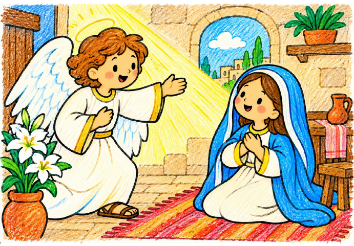
María y la anunciación
Descubrimos cómo María recibe la noticia de que será la madre de Jesús y confía en Dios.
📄 Abrir PDF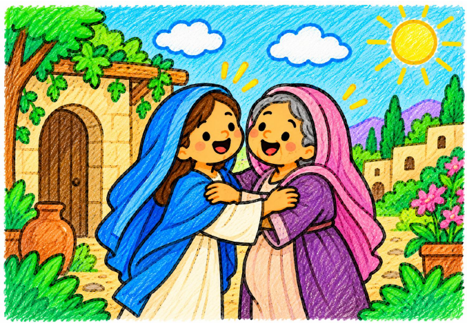
Isabel y la Visitación
Descubrimos el viaje alegre de la Virgen María para ayudar a su prima Isabel.
📄 Abrir PDF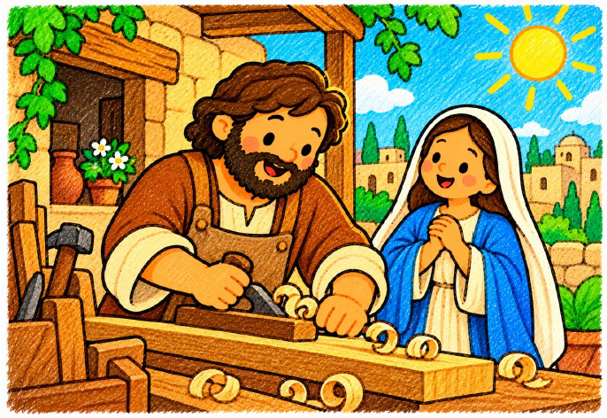
José, esposo de María
Descubrimos el viaje alegre de la Virgen María para ayudar a su prima Isabel.
📄 Abrir PDF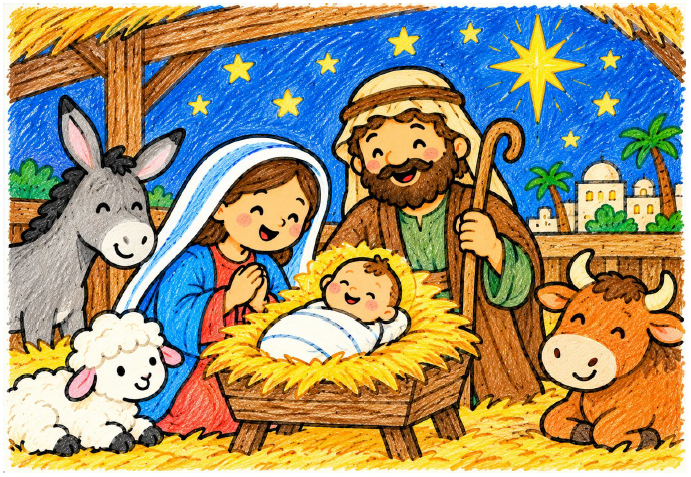
El nacimiento de Jesús
Conocemos a María y José y celebramos el nacimiento de Jesús en Belén.
📄 Abrir PDF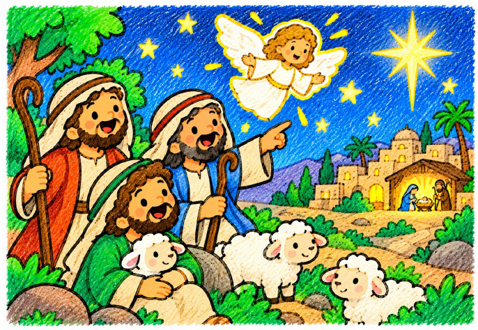
Los Pastores de Belén
Guiados por el mensaje de los ángeles, unos humildes pastores fueron corriendo a Belén y encontraron al niño Jesús en un pesebre.
📄 Abrir PDF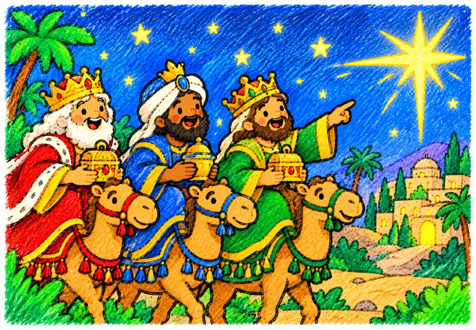
Los reyes Magos
Siguiendo una estrella brillante en el cielo, tres sabios Reyes Magos de Oriente viajaron hasta Belén para conocer y regalarle oro, incienso y mirra al Niño Jesús.
📄 Abrir PDF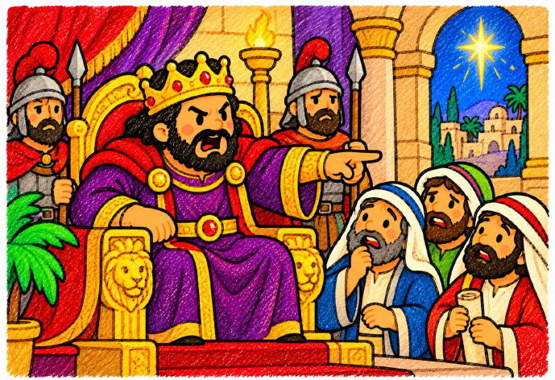
El rey Herodes
Herodes fue un rey muy egoísta y miedoso que, al enterarse de que había nacido el niño Jesús, tuvo tanto miedo de perder su trono que intentó hacerle daño.
📄 Abrir PDF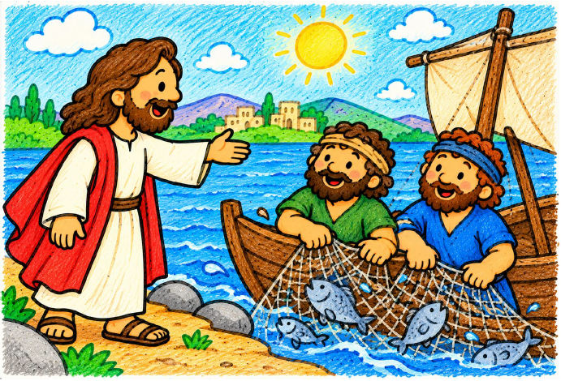
Jesús llama a sus discípulos
Aprendemos cómo Jesús invita a varias personas a seguirlo y compartir su misión.
📄 Abrir PDF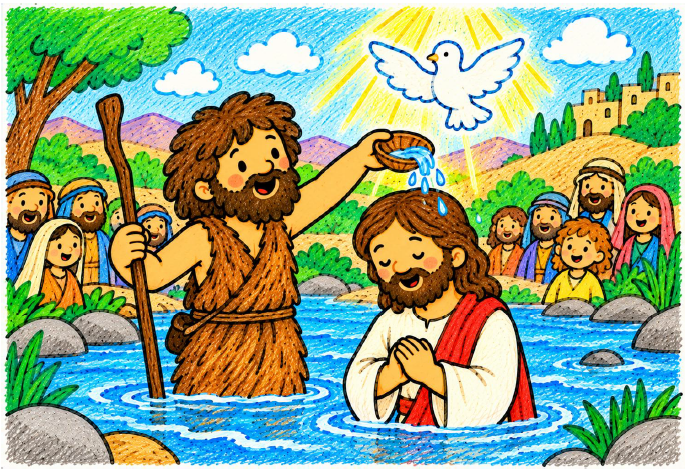
Juan el Bautista
Conocemos a Juan, que anuncia la llegada de Jesús e invita a preparar el corazón.
📄 Abrir PDF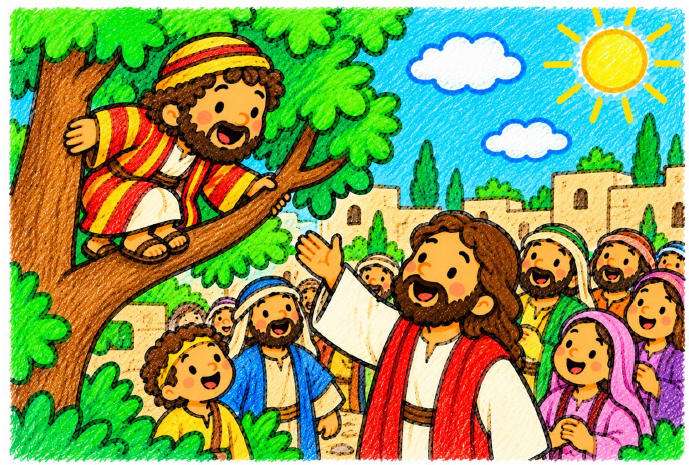
Zaqueo
Descubrimos cómo el encuentro con Jesús puede ayudarnos a cambiar y hacer el bien.
📄 Abrir PDF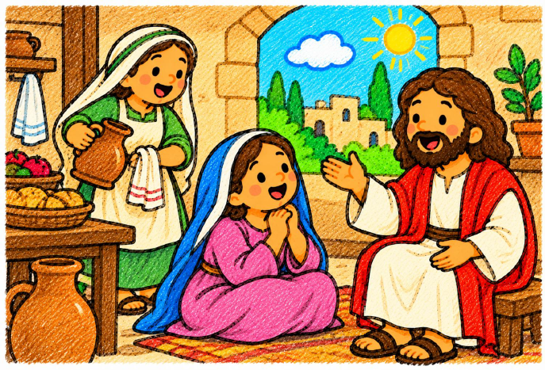
Marta y María
Aprendemos de las dos hermanas y de la importancia de escuchar a Jesús.
📄 Abrir PDF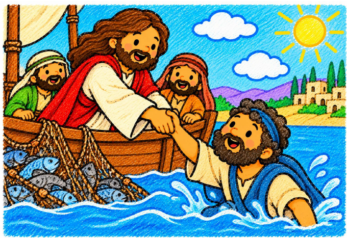
Pedro, el amigo de Jesús
Conocemos a Pedro, uno de los discípulos de Jesús, y aprendemos sobre la amistad y la confianza.
📄 Abrir PDF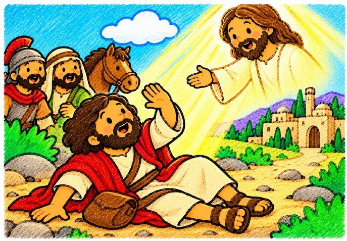
Pablo de Tarso
Descubrimos cómo Pablo dedicó su vida a anunciar el mensaje de Jesús a muchas personas.
📄 Abrir PDF